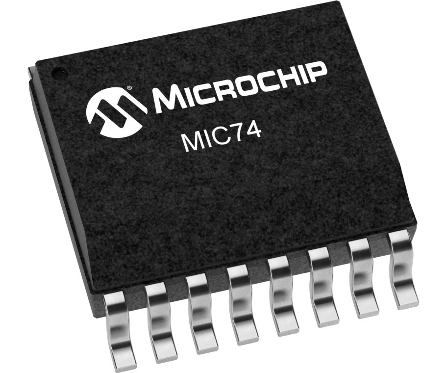
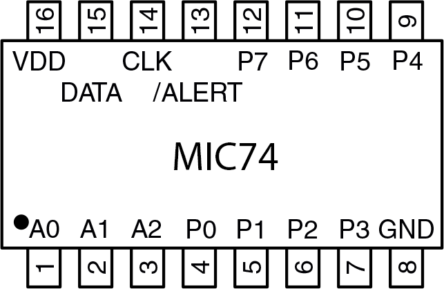
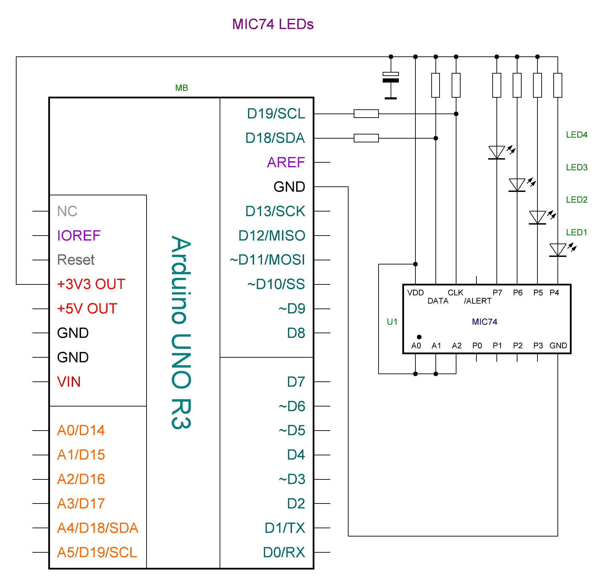

Documentation made in Open source online Markdown editor and converted to HTML in Free Markdown to HTML Converter.
It is an Arduino Library to control the MIC74 8-Bit I/O Expander.
The MIC74 device provides 8-bit, general purpose, parallel I/O expansion. It can be controlled via I²C bus applications. It is a great and inexpensive device that allow you to add more peripherals to be controlled by your Arduino board via I²C protocol.
Some Arduino projects may require more pins than the Arduino actually has. In these cases, you can use up to 8 MIC74 devices using only the I²C bus (two Arduino pins) and add up to 64 input / output ports to your project.
This Arduino library implements the most important functions available on MIC74 device and can be freely distributed using the MIT Free Software model.
Copyright (c) 2023 Tarasenko Andrey.
Contents
[TOCM]
[TOC]
Copyright (c) 2023 Andrey Tarasenko
Permission is hereby granted, free of charge, to any person obtaining a copy of this software and associated documentation files (the "Software"), to deal in the Software without restriction, including without limitation the rights to use, copy, modify, merge, publish, distribute, sublicense, and/or sell copies of the Software, and to permit persons to whom the Software is furnished to do so, subject to the following conditions:
The above copyright notice and this permission notice shall be included in all copies or substantial portions of the Software.
THE SOFTWARE IS PROVIDED "AS IS", WITHOUT WARRANTY OF ANY KIND, EXPRESS OR IMPLIED, INCLUDING BUT NOT LIMITED TO THE WARRANTIES OF MERCHANTABILITY, FITNESS FOR A PARTICULAR PURPOSE AND NONINFRINGEMENT. IN NO EVENT SHALL THE AUTHORS OR COPYRIGHT HOLDERS BE LIABLE FOR ANY CLAIM, DAMAGES OR OTHER LIABILITY, WHETHER IN AN ACTION OF CONTRACT, TORT OR OTHERWISE, ARISING FROM, OUT OF OR IN CONNECTION WITH THE SOFTWARE OR THE USE OR OTHER DEALINGS IN THE SOFTWARE.
This library uses the I²C communication protocol and implements most important functions offered by MIC74 device from Microchip. It also has primitive functions that make it easier to implement commands that may not have been implemented yet. The main features implemented can be seen below:
{% include video01.html %}
You can install this library on your Arduino environment using different methods. The best ways to do that are described below.
This is the easiest method to install this library.
On Arduino IDE, select the "Tools" >> Manage Libraries..." item and look for MIC74. Finally select "AnTar MIC74". The images below show the installation process.

See also Installing Libraries
First, you have to download this library in zip format. After, unzip the AnTar_MIC74-main.zip file in your Arduino Library folder:
With that approach, you will have the most current version of the library. However, it may not be the most stable version. This is because the current version is always in development. Do you need some old version (release) of this library? If yes, check here.
The MIC74 chip is a fully programmable serial-to-parallel I/O expander converter that is compatible with the SMBus™ protocol. It operates as a bus client providing eight independent I/O lines.
Each I/O bit can be individually programmed as an input or output. If any pin is programmed as an output, then each such pin can be programmed as an open-drain output or a push-pull output. If desired, four outputs can be programmed to implement fan speed control. An internal clock and status system eliminates the overhead required to control fan speed.
The output pins are capable of directly driving loads such as LEDs. It is possible to use interrupts during state changes on the input pins. This eliminates the need to poll the device each time to obtain pin status information. Three address selection inputs are provided, allowing up to eight devices to be connected and shared on the same bus, providing a total of 64 additional I/Os to your microcontroller.
The MIC74 chip is available in an ultra-compact 16-pin QSOP package. Low quiescent current, small footprint and low chassis height make the MIC74 ideal for portable and desktop applications:

For configuration and control, the MIC74 chip has 7 registers, each of which consists of 8 bits:
| Register | Address | Description |
|---|---|---|
| DEV_CFG | 0x00 | Device configuration read/write register |
| DIR | 0x01 | Data direction read/write register |
| OUT_CFG | 0x02 | Output configuration read/write register |
| STATUS | 0x03 | Status read register |
| INT_MASK | 0x04 | Interrupt mask read/write register |
| DATA | 0x05 | Data read/write register |
| FAN_SPEED | 0x06 | Fan speed read/write register, Determines bit-pattern on FS[2:0] |
This library has two categories of functions that you can use to control everything on the MIC74. The first category includes configuration functions and is used less frequently, while the second category consists of control functions and is used more often. This library also has other auxiliary functions that simplify the creation of applications based on Arduino and MIC74 devices. See API documentation.
Function for setting the pin direction and operating mode of the output:
pinMode(pin, mode);
This function interacts with three registers at once and, in addition to specifying the output direction, can set an interrupt mask for it, in the case of setting the output to an input, or a push-pull mode for the output stage, in the case of setting the output to an output. In the case of simply specifying a pin to operate as an input, interrupts for it will be disabled, and for operation as an output, the operating mode of the output stage will be set to open drain.
Function to configure the entire port at once
writePortMode(value);
Where in the required positions “0” or “1” is written instead of “x”, for example writePortMode(0b11111111); will simultaneously set all pins of the chip to the output direction, and writePortMode(0b00000000); accordingly to the entrance.
The image below shows a basic MIC74 application with LED. You can control up to 8 LEDs. The I²C bus address is set to 0x27. You can select another I²C address by dealing with the A0, A1 and A2 pins (from 0x20 to 0x27). This circuit uses the MIC74 GPIO PINs as output.

Also this library has other functions that make the job easier to build applications. See API documentation.